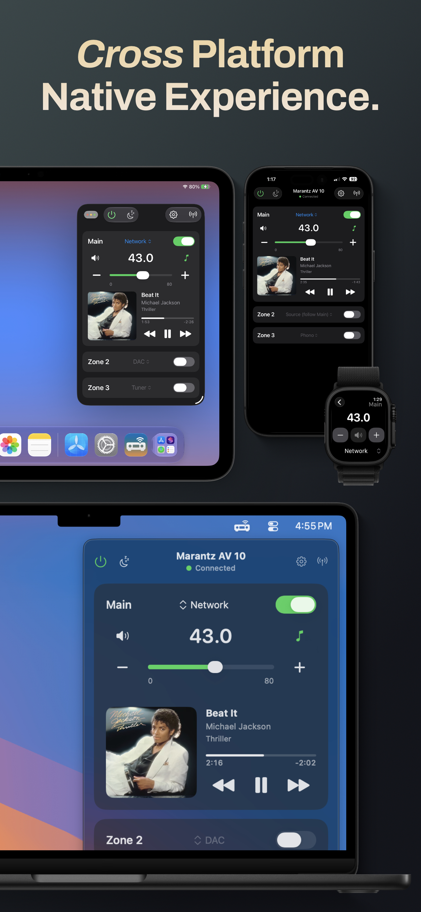

Across your devicesiPhone · iPad · Apple Watch
A native control app for compatible Denon and Marantz receivers, built for iPhone, iPad, Mac, and Apple Watch.
See the appThink of it as the switchboard for your home theater.
Your TV, game console, streamer, and speakers all connect through it. The receiver routes the audio and video and handles the controls in between.
Swipe through the app.